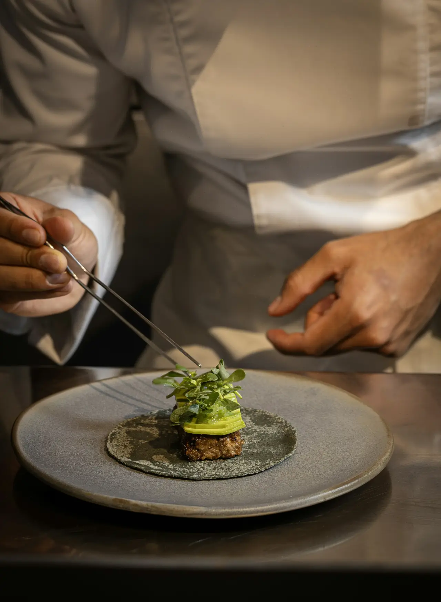
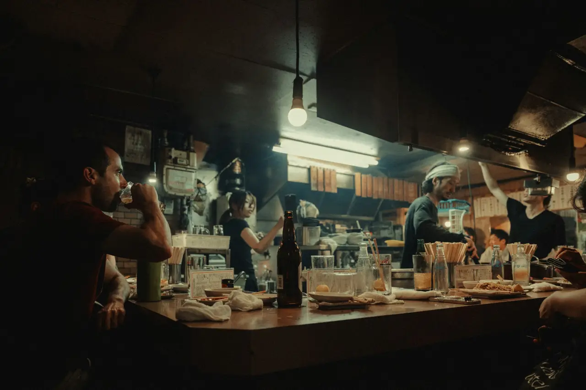

Thai chef's table · Jægersborggade 22, Nørrebro
Smoke, lime and a late table.
- At the counter
- Six seats
- One seating
- Wed–Sat, 19:00
- Twelve courses
- 1,450 kr

The kitchen
Saep is the Isan word for food that hits every note at once. We cook it for six people a night, a metre from the wok.
Twelve courses that follow the market, cooked over charcoal and a wok burner that runs hotter than it should. Thai technique, Danish produce. You sit at the counter, the chef talks you through it, and nobody is in a hurry.
Balance · how a som tam is made
Five tastes, one mortar.
- เผ็ด Spicy Two bird's-eye chillies, bruised, never chopped.
- เปรี้ยว Sour Half a lime, squeezed straight into the mortar.
- เค็ม Salty Fish sauce, one long pour, then the pestle.
- หวาน Sweet Palm sugar, pounded until you can't find it.
- หอม Fragrant Torn herbs, last, so they stay loud.


No dish tastes of one thing.
Tonight · the autumn menu
Twelve courses, from one bite of miang to mango and sticky rice.
Read the whole menu
The chef
“I cook the food I grew up on. I just have better fish now.”
Napat “Nok” Thongchai grew up in Khon Kaen, where dinner was pounded in a clay mortar on the floor of the kitchen. Then came ten years in Bangkok, from night-market woks to a tasting counter, and in 2016 Copenhagen, the cold, and the best shellfish Nok had ever cooked.
Saep is the counter Nok wanted to sit at: close enough to hear the wok, small enough that the chef knows your name by the third course.

The counter
Six seats. One seating. Seven o’clock.
-
Everyone starts together
Doors open at 18:45. The first course goes out at seven, to all six seats at once.
-
Cooked in front of you
The wok, the charcoal and the mortar are all on your side of the pass. Ask anything.
-
About three hours
Long enough for twelve courses, short enough that nobody looks at their phone.
Book
Seats open on the first of each month, for the month after.
Book a seat1,450 kr a person · wine pairing 950 kr · juice and tea pairing 550 kr